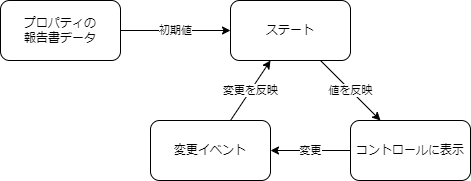

フォームの作成
これまで作ってきた、各コントロールを配置したフォームコンポーネントを作成しましょう。
フォームコンポーネントの作成
hygen を使います。フォームは、新規作成(URLパスcareStaff/reports/new)でも編集(URLパスcareStaff/reports/[id]/edit)でも同じものを使いまわしたいので、ディレクトリのパスはapp/careStaff/reports/_partsにします。
| $ npx hygen component new
✔ コンポーネント名を入力してください。 · ReportForm
✔ どこに作りますか？'src/components/'以下のパスを指定してください。 · app/careStaff/reports/_parts
Loaded templates: _templates
added: src/components/pageParts/careStaff/ReportDetail/ReportForm/ReportForm.tsx
added: src/components/pageParts/careStaff/ReportDetail/ReportForm/ReportForm.stories.tsx
added: src/components/pageParts/careStaff/ReportDetail/ReportForm/ReportForm.test.tsx
added: src/components/pageParts/careStaff/ReportDetail/ReportForm/index.ts
|
フォームコンポーネントの実装
利用者のコントロールを配置する
次に、フォームのコントロールを配置します。テストで、各コントロールにプロパティで渡した報告書のデータが表示されていることを確認しましょう。
まずは、利用者のコントロールからです。
| src/app/careStaff/reports/_parts/ReportForm/ReportForm.test.tsx |
|---|
| import { Report } from '@/contexts/work-reports/entities/reports/reportSchema';
import { render as _render, screen } from '@testing-library/react';
import { ComponentProps } from 'react';
import { ReportForm } from './ReportForm';
const render = (props: ComponentProps<typeof ReportForm>) => {
return _render(<ReportForm {...props} />);
};
const report: Report = {
id: '999',
careType: 'life-support',
user: {
id: '001',
name: '利用者 001',
},
reviewStatus: 'editing',
notice: '申し送り事項テキスト',
moveDistanceKM: 10.5,
workContent: '作業内容テキスト',
workTime: {
endTimestamp: new Date('2021-01-01T10:00:00'),
startTimestamp: new Date('2021-01-01T09:00:00'),
},
};
test('renders', () => {
render({ report });
const userName = screen.getByText('利用者 001');
expect(userName).toBeInTheDocument();
const careBadge = screen.getByTestId('report-user-care-type');
expect(careBadge).toHaveTextContent('生活補助');
});
|
実装します。
| src/app/careStaff/reports/_parts/ReportForm/ReportForm.tsx |
|---|
| import { Report } from '@/contexts/work-reports/entities/reports/reportSchema';
import React from 'react';
import { UserNameControl } from '../../[id]/_parts/UserNameControl';
type Props = {
report: Report;
};
export const ReportForm: React.FC<Props> = ({ report }) => {
return (
<div data-testid="ReportForm-container">
<UserNameControl report={report} onChange={() => {}} users={[]} />
</div>
);
};
|
テストが成功したと思います。
今はまだプロパティのreportの値を反映しているかの確認なので、onChange や users は、仮のものです。
作業時間のコントロールを配置する
作業日時のコントロールを配置して、データが正しくバインドされるかを。確認します。
テストです。ここでは、report の workTime の値を変更して、それがフォームに反映されるかを確認します。
| src/app/careStaff/reports/_parts/ReportForm/ReportForm.test.tsx |
|---|
| test("renders", () => {
// ... 略
// 作業時間コントロール
const dateInput = screen.getByTestId("date-input");
expect(dateInput).toHaveValue("2021-01-01");
const [start, end] = screen.getAllByRole("combobox");
expect(start).toHaveValue("09:00");
expect(end).toHaveValue("10:00");
});
|
実装は次のようになります。
| src/app/careStaff/reports/_parts/ReportForm/ReportForm.tsx |
|---|
| export const ReportForm: React.FC<Props> = ({ report }) => {
return (
<div data-testid="ReportForm-container">
<UserNameControl report={report} onChange={() => {}} users={[]} />
<WorkTimeControl workTime={report.workTime} onChange={() => {}} />
</div>
);
};
|
移動距離のコントロールを配置する
移動距離のコントロールを配置して、データが正しくバインドされるかを。確認します。
テストです。ここでは、report の moveDistanceKM の値を変更して、それがフォームに反映されるかを確認します。
数値型入力のコントロールなので、toHaveValueで比較する場合にも数値で比較します。
| src/app/careStaff/reports/_parts/ReportForm/ReportForm.test.tsx |
|---|
| test("renders", () => {
// ... 略
// 移動距離コントロール
const distanceInput = screen.getByRole("spinbutton", {
name: "move-distance-input",
});
expect(distanceInput).toHaveValue(10.5);
});
|
実装は次のようになります。
| src/app/careStaff/reports/_parts/ReportForm/ReportForm.tsx |
|---|
| // 略
return (
<div data-testid="ReportForm-container">
<UserNameControl report={report} onChange={() => {}} users={[]} />
<WorkTimeControl workTime={report.workTime} onChange={() => {}} />
<MoveDistanceControl
distanceKM={report.moveDistanceKM}
onBlur={() => {}}
/>
</div>
);
|
作業内容、申し送り事項のコントロールを配置する
作業内容、申し送り事項のコントロールを配置します。
テストとして、report の workContent と notice の値を変更して、それがフォームに反映されるかを確認します。
それぞれのコントロールの違いを aria-label で区別します。
| src/app/careStaff/reports/_parts/ReportForm/ReportForm.test.tsx |
|---|
| test("renders", () => {
// 略
// 作業内容コントロール
const workContentInput = screen.getByLabelText('作業内容');
expect(workContentInput).toHaveValue('作業内容テキスト');
// 申し送り事項コントロール
const noticeInput = screen.getByLabelText('申し送り事項');
expect(noticeInput).toHaveValue('申し送り事項テキスト');});
|
実装です。
| src/app/careStaff/reports/_parts/ReportForm/ReportForm.tsx |
|---|
| // 略
return (
<div data-testid="ReportForm-container">
<UserNameControl report={report} onChange={() => {}} users={[]} />
<WorkTimeControl workTime={report.workTime} onChange={() => {}} />
<MoveDistanceControl
distanceKM={report.moveDistanceKM}
onChange={() => {}}
/>
<NoteControl
label="作業内容"
report={report}
onChange={() => {}}
propName="workContent"
/>
<NoteControl
label="申し送り事項"
report={report}
onChange={() => {}}
propName="notice"
/>
</div>
);
|
これらのコントロールは、NoteControlコンポーネントを利用することとしていましたが、aria-labelを設定していないので、修正します。
| src/components/pageParts/careStaff/ReportDetail/NoteControl/NoteControl.tsx |
|---|
| <textarea
id={id}
value={report[propName]}
className="textarea textarea-bordered"
onChange={textareaOnChange}
aria-label={propName}
/>
|
各コントロールの変更処理の実装
各コントロールを変更したときの処理を実装しましょう。
どこでデータを管理するか
変更時には、React ではステートやプロパティで渡されたデータを テキストボックスのvalueなどに割り当てます。
そしてその値を変更するには、そのステートやプロパティのデータの値を変更して、valueの値を変化させる、ということが必要です。
React以前のフレームワークでは、データをPostするときには各コントロールから値を拾い集めてきて、それをまとめて送信する、ということが一般的でした。
Reactなどの昨今のフレームワークでは、モデルとしデータのオブジェクトを管理し、それをテキストボックスなどにバインドし、変更はそのデータオブエジェクトに対して行います。
データを送信するときは、そのデータオブジェクトをそのまま送信する、とすることで、データが管理しやすく整合性やコードの保守性を保つことができます。
今の実装では、reportをプロパティで渡される前提なので、このコンポーネントを利用する親コンポーネントで、
reportのデータオブジェクトを管理することになります。

テストを書く
実装方法をどうするかを考える前に、フォームとしての動作を確認するため、テストを書きます。
プロパティのreportは、初期値ということになったので、名前もそれとわかるようにdefaultReportと変更します。
(前のテストのプロパティ名も変えておきましょう)
| src/app/careStaff/reports/_parts/ReportForm/ReportForm.test.tsx |
|---|
| test("change events", () => {
const user = userEvent.setup();
render({ defaultReport: report, userList });
// ユーザー名変更
// 編集ボタンをクリックする
const button = screen.getByRole('button', {
name: 'show-user-select-dialog',
});
await user.click(button);
// ユーザーを選択する
const dialog = within(screen.getByRole('dialog'));
const rows = dialog.getAllByRole('listitem');
await user.click(rows[0]);
// 利用者名が変更されている
const userName = screen.getByTestId('report-user-name');
expect(userName).toHaveTextContent('利用者 a000');
// 作業時間変更
const dateInput = screen.getByTestId('date-input');
fireEvent.change(dateInput, { target: { value: '2023-09-01' } });
// await user.type(dateInput, '{selectall}{backspace}2023-09-01');
expect(dateInput).toHaveValue('2023-09-01');
const [start, end] = screen.getAllByRole('combobox');
await user.selectOptions(start, '12:00');
expect(start).toHaveValue('12:00');
await user.selectOptions(end, '13:00');
expect(end).toHaveValue('13:00');
// 移動距離変更
const distanceInput = screen.getByRole('spinbutton', {
name: 'move-distance-input',
});
await user.clear(distanceInput);
await user.type(distanceInput, '20.5');
expect(distanceInput).toHaveValue(20.5);
// 作業内容変更
const workContentInput = screen.getByLabelText('作業内容');
await user.clear(workContentInput);
await user.type(workContentInput, '作業内容テキスト2');
expect(workContentInput).toHaveValue('作業内容テキスト2');
// 申し送り事項変更
const noticeInput = screen.getByLabelText('申し送り事項');
await user.clear(noticeInput);
await user.type(noticeInput, '申し送り事項テキスト2');
expect(noticeInput).toHaveValue('申し送り事項テキスト2');
});
|
ユーザー名の変更は、ユーザー選択ダイアログを表示して、その中から選択する、という動作になります。
その行を取得するところでエラーになります。リストのデータを渡していないためですね。
フォームコンポーネントのプロパティとしてもこれを受け取り、利用者コントロールに渡します。
| src/app/careStaff/reports/_parts/ReportForm/ReportForm.tsx |
|---|
| type Props = {
defaultReport: Report;
userList: User[];
};
export const ReportForm: React.FC<Props> = ({ defaultReport, userList }) => {
// 略
<UserNameControl report={report} onChange={() => {}} users={userList} />
// 略
|
テストで、ダイアログに表示する利用者データのリストを渡して、テストを実行します。
| src/app/careStaff/reports/_parts/ReportForm/ReportForm.test.tsx |
|---|
| const careTypes: { [key: number]: CareType } = {
0: 'physical-support',
1: 'life-support',
2: 'attend-hospital',
};
const users = [...Array(10)].map(
(_, i) =>
({
id: `${i.toString().padStart(3, '0')}`,
careType: careTypes[i % 3],
name: `利用者 ${i.toString().padStart(3, '0')}`,
} as User),
);
// 略
test('change events', () => {
render({ defaultReport: report, userList: users });
// ユーザー名変更
// 編集ボタンをクリックする
const button = screen.getByRole('button', {
name: 'show-user-select-dialog',
});
fireEvent.click(button);
// ユーザーを選択する
const rows = screen.getAllByRole('listitem', { name: 'user-row' });
fireEvent.click(rows[0]);
// 利用者名が変更されている
const userName = screen.getByLabelText('user-name');
// ここでエラーになることでOK
expect(userName).toHaveTextContent('利用者 0');
// 略
|
rendersテストの方も修正しておきます。
これで、変更後の確認のところでエラーになると思います。今はこれでOKです。
ステートを定義する
defaultReportを初期値とする、ステートを定義します。
| src/app/careStaff/reports/_parts/ReportForm/ReportForm.tsx |
|---|
| export const ReportForm: React.FC<Props> = ({ defaultReport, userList }) => {
const [report, setReport] = React.useState(defaultReport);
// 略
|
利用者のコントロールの変更処理を実装する
利用者コントロールのonChangeに渡す関数を、useCallback で定義します。
useStateから受け取ったsetReportでステートを変更します。useStateでのsetXXXXは、引数に変更値をそのまま渡すこともできますが、
現在の値を引数とした関数も定義できます。
今回のように、オブジェクトの一部を変更したい場合、下記のように現在のオブジェクトの値を...(スプレッド構文)を利用し新しいオブジェクトに展開し、変更する項目だけ指定する、ことが最も効率が良いでしょう。
| src/app/careStaff/reports/_parts/ReportForm/ReportForm.tsx |
|---|
| // 略
const handleUserChange = useCallback((user: User) => {
setReport((prev) => ({ ...prev, userName: user.name }));
}, []);
// 略
<UserNameControl
report={report}
onChange={handleUserChange}
users={userList}
/>;
|
なお、下記のようにするのはNGです。これだとオブジェクトの中の値は変更されますが、オブジェクト自体が変更されないため、Reactのステートは変更されていないと判断され、再レンダリングしないため値が変更されません。
| src/app/careStaff/reports/_parts/ReportForm/ReportForm.tsx |
|---|
| // ❌悪い例
const handleUserChange = useCallback(
(user: User) => {
report.userName = user.name;
setReport(report);
},
[report],
);
// 略
|
また、下記は間違いではないですが、ステートの値が変更されるたびに関数が再定義されるので、微々たるものではありますがパフォーマンス上好ましくありません。
| src/app/careStaff/reports/_parts/ReportForm/ReportForm.tsx |
|---|
| // △ イマイチな実装
const handleUserChange = useCallback(
(user: User) => {
const newReport = { ...report, userName: user.name };
setReport(newReport);
},
[report],
);
|
その他のコントロールを実装する
他のコントロールも一気に書いてしまします。
| src/app/careStaff/reports/_parts/ReportForm/ReportForm.tsx |
|---|
| // 略
const handleWorkTimeChange = useCallback((Report['workTime']) => {
setReport((prev) => ({ ...prev, workTime }));
}, []);
const handleMoveDistanceChange = useCallback((distanceKM: number) => {
setReport((prev) => ({ ...prev, moveDistanceKM: distanceKM }));
}, []);
const handleWorkContentChange = useCallback((workContent: string) => {
setReport((prev) => ({ ...prev, workContent }));
}, []);
const handleNoticeChange = useCallback((notice: string) => {
setReport((prev) => ({ ...prev, notice }));
}, []);
// 略
<WorkTimeControl
workTime={report.workTime}
onChange={handleWorkTimeChange}
/>
<MoveDistanceControl
distanceKM={report.moveDistanceKM}
onChange={handleMoveDistanceChange}
/>
<NoteControl
label="作業内容"
report={report}
onChange={handleWorkContentChange}
propName="workContent"
/>
<NoteControl
label="申し送り事項"
report={report}
onChange={handleNoticeChange}
propName="notice"
/>
|
いかがでしょう？先程のテストが全て成功したと思います。ここでは省略しましたが、コントロール1つずつテストと実装を書いていくことをおすすめします。
更新処理を一元化してみる
テストは全て通ったのですが、コントロールごとに変更関数があるので、これを一元化してみたくなります。そのリファクタに挑戦しましょう。
onChangeに割り当てる関数を一元化しようとすると、引数として、プロパティ名と値を受け取れば良さそうです。
しかし、TypeScript では厳密な型定義を行うので、この型定義を工夫する必要があります。
引数のプロパティ名としては、Reportのプロパティ名に限定すべきです。また、値は、そのプロパティの型に合わせる必要があります。
TypeScript のkeyofとジェネリック型引数を利用することで、これが実現できます。
Warning
引数にany型を指定することで、実装はできます。しかし、プロパティ名の変更やスペルミス、値の型の間違いなどをコンパイル時に検出できなくなります。
すぐに諦めてanyに頼るのではなく、できるだけ TypeScript の型を駆使して実装することが、保守性の高いコードを書くコツです。
| src/app/careStaff/reports/_parts/ReportForm/ReportForm.tsx |
|---|
| // 各コントロールの`handleXXXX`は削除します。
const handleReportChange = useCallback(<T extends keyof Report>(propName: T, value: Report[T]) => {
setReport((prev) => ({ ...prev, [propName]: value }));
}, []);
// 略
return (
<div data-testid="ReportForm-container">
<UserNameControl
report={report}
onChange={handleReportChange}
users={userList}
/>
<WorkTimeControl
workTime={report.workTime}
onChange={handleReportChange}
/>
<MoveDistanceControl
distanceKM={report.moveDistanceKM}
onChange={handleReportChange}
/>
<NoteControl
label="作業内容"
report={report}
onChange={handleReportChange}
propName="workContent"
/>
<NoteControl
label="申し送り事項"
report={report}
onChange={handleReportChange}
propName="notice"
/>
</div>
|
useCallbackに渡す関数に、まずジェネリック型引数お定義をします。その型は、keyof Reportで"Reportのプロパティ名のいずれかの文字列"、という型をTとしています。第1引数では、Reportのプロパティ名を受けるので、T型を指定します。第2引数は、値ですが型としてReport[T]とすることで、Reportの第1引数で指定したプロパティ名の型、という意味になります。
このように、ジェネリック型を駆使すると、引数同士の型の関連性を持たせることができます。
各コントロールのonChangeが型違反でエラーになります。各コントロールのonChangeの型定義を修正します。それぞれ、onChangeイベントのテストを修正しつつ変更します。
各コントロールのonChangeプロパティでは、引数にプロパティ名を固定で引数を渡すようにするため、文字列リテラル型を利用します。
利用者コントロール
テスト
| src/components/pageParts/careStaff/ReportDetail/UserNameControl/UserNameControl.test.tsx |
|---|
| test("shows user name and id when select user", () => {
const onChange = jest.fn();
render({
report,
users,
onChange,
});
// 編集ボタンをクリックする
const button = screen.getByRole("button", {
name: "show-user-select-dialog",
});
fireEvent.click(button);
// ユーザーを選択する
const rows = screen.getAllByRole("listitem", { name: "user-row" });
fireEvent.click(rows[0]);
// ダイアログが閉じること
const dialog = screen.getByTestId("dialog") as unknown as HTMLDialogElement;
expect(dialog.open).toBe(false);
// `onChange` が呼ばれること。引数に選択したユーザーが渡されること
expect(onChange).toHaveBeenCalledWith("userName", users[0].name);
});
|
実装
| src/components/pageParts/careStaff/ReportDetail/UserNameControl/UserNameControl.tsx |
|---|
| type Props = {
report: Report;
users: User[];
onChange: (propName: "userName", name: Report["userName"]) => void;
};
// 略
const onSelectUser = useCallback(
(user: User) => {
onChange("userName", user.name);
onCloseDialog();
},
[onChange, onCloseDialog],
);
|
作業時間コントロール
テスト
| src/components/pageParts/careStaff/ReportDetail/WorkTimeControl/WorkTimeControl.test.tsx |
|---|
| test("onChange", () => {
const onChange = jest.fn();
const workTime: Report["workTime"] = {
startTimestamp: new Date("2023-08-01T09:00:00+09:00"),
endTimestamp: new Date("2023-08-01T10:00:00+09:00"),
};
render({
workTime,
onChange,
});
const dateInput = screen.getByTestId("date-input");
fireEvent.change(dateInput, { target: { value: "2023-08-02" } });
expect(onChange).toHaveBeenCalledWith("workTime", {
...workTime,
startTimestamp: new Date("2023-08-02T09:00:00+09:00"),
endTimestamp: new Date("2023-08-02T10:00:00+09:00"),
});
const [start, end] = screen.getAllByRole("combobox", {
name: "time-input",
});
fireEvent.change(start, { target: { value: "12:00" } });
expect(onChange).toHaveBeenCalledWith("workTime", {
...workTime,
startTimestamp: new Date("2023-08-01T12:00:00+09:00"),
});
fireEvent.change(end, { target: { value: "13:00" } });
expect(onChange).toHaveBeenCalledWith("workTime", {
...workTime,
endTimestamp: new Date("2023-08-01T13:00:00+09:00"),
});
});
|
実装
| src/components/pageParts/careStaff/ReportDetail/WorkTimeControl/WorkTimeControl.tsx |
|---|
| type Props = {
workTime: Report["workTime"];
onChange: (propName: "workTime", workTime: Report["workTime"]) => void;
};
// 略
const onDateChange = useCallback(
(e: ChangeEvent<HTMLInputElement>) => {
const { valueAsDate } = e.target;
if (!valueAsDate) return;
const startTime = setDate(startTimestamp, valueAsDate);
const endTime = setDate(endTimestamp, valueAsDate);
onChange("workTime", {
...workTime,
startTimestamp: startTime.toDate(),
endTimestamp: endTime.toDate(),
});
},
[endTimestamp, onChange, startTimestamp, workTime],
);
const onStartTimeChange = useCallback(
(value: Date) => {
onChange("workTime", {
...workTime,
startTimestamp: value,
});
},
[onChange, workTime],
);
const onEndTimeChange = useCallback(
(value: Date) => {
onChange("workTime", {
...workTime,
endTimestamp: value,
});
},
[onChange, workTime],
);
|
移動距離コントロール
テスト
| src/components/pageParts/careStaff/ReportDetail/MoveDistanceControl/MoveDistanceControl.test.tsx |
|---|
| test("onChange", () => {
const onChange = jest.fn();
render({
distanceKM: 1,
onChange,
});
const input = screen.getByRole("spinbutton", {
name: "move-distance-input",
}) as HTMLInputElement;
fireEvent.change(input, { target: { value: "2" } });
expect(onChange).toHaveBeenCalledWith("moveDistanceKM", 2);
});
// 数値として不正な値が入力された場合、onChangeが呼ばれない
test("onChange invalid value", () => {
const onChange = jest.fn();
render({
distanceKM: 1,
onChange,
});
const input = screen.getByRole("spinbutton", {
name: "move-distance-input",
}) as HTMLInputElement;
fireEvent.change(input, { target: { value: "1.a" } });
expect(onChange).not.toHaveBeenCalled();
});
// 小数点第2以下は四捨五入して、onChangeが呼ばれる
test("onChange round", () => {
const onChange = jest.fn();
render({
distanceKM: 1,
onChange,
});
const input = screen.getByRole("spinbutton", {
name: "move-distance-input",
}) as HTMLInputElement;
fireEvent.change(input, { target: { value: "1.05" } });
expect(onChange).toHaveBeenCalledWith("moveDistanceKM", 1.1);
});
|
実装
| src/components/pageParts/careStaff/ReportDetail/MoveDistanceControl/MoveDistanceControl.tsx |
|---|
| type Props = {
distanceKM: number;
onChange: (
propName: "moveDistanceKM",
distanceKM: Report["moveDistanceKM"],
) => void;
};
const onChangeInput = useCallback(
(e: ChangeEvent<HTMLInputElement>) => {
const { valueAsNumber } = e.target;
// 小数点第2以下は四捨五入する
const value = Math.round(valueAsNumber * 10) / 10;
if (Number.isNaN(value)) {
return;
}
onChange("moveDistanceKM", value);
},
[onChange],
);
|
作業内容・申し送りコントロール
テスト
| src/components/pageParts/careStaff/ReportDetail/NoteControl/NoteControl.test.tsx |
|---|
| test('on change - workContent', () => {
const onChange = jest.fn();
render({
report,
onChange,
propName: 'workContent',
label: '作業内容',
});
// テキストエリアの確認
const textbox = screen.getByRole('textbox');
// テキストエリアの内容を変更する
fireEvent.change(textbox, {
target: {
value: '作業内容のテキストを変更しました',
},
});
// onChange が呼び出されていることを確認する
expect(onChange).toHaveBeenCalledWith(
'workContent',
'作業内容のテキストを変更しました',
);
});
// 略
test('on change - notice', () => {
const onChange = jest.fn();
render({
report,
onChange,
propName: 'notice',
label: '申し送り事項',
});
// テキストエリアの確認
const textbox = screen.getByRole('textbox');
// テキストエリアの内容を変更する
fireEvent.change(textbox, {
target: {
value: '申し送り事項のテキストを変更しました',
},
});
// onChange が呼び出されていることを確認する
expect(onChange).toHaveBeenCalledWith(
'notice',
'申し送り事項のテキストを変更しました',
);
});
});
|
実装
| src/components/pageParts/careStaff/ReportDetail/NoteControl/NoteControl.tsx |
|---|
| type Props = {
report: Report;
onChange: <T extends 'workContent' | 'notice'>(
propName: T,
args: Report[T],
) => void;
label: string;
propName: Extract<keyof Report, 'notice' | 'workContent'>;
};
export const NoteControl: React.FC<Props> = (props) => {
const { report, onChange, label, propName } = props;
const id = useId();
const textareaOnChange = useCallback(
(e: ChangeEvent<HTMLTextAreaElement>) => {
onChange(propName, e.target.value);
},
[onChange, propName],
);
return (
<Label id={id} label={label}>
<textarea
id={id}
value={report[propName]}
className="textarea textarea-bordered"
onChange={textareaOnChange}
aria-label={propName}
/>
</Label>
);
};
|
スタイルを調整する
Storybookで、フォームのスタイルを確認し調整しましょう。
プロパティに渡すデータが必要です。これはテストで使用したものをコピーすればよいでしょう。
| src/app/careStaff/reports/_parts/ReportForm/ReportForm.stories.tsx |
|---|
| import { CareType } from "@/contexts/work-reports/careType";
import { Report } from "@/contexts/work-reports/entities/reports/reportSchema";
import { User } from "@/contexts/work-reports/entities/users/useSchema";
import { Meta, StoryObj } from "@storybook/react";
import { ReportForm } from "./ReportForm";
export default {
title: "pageParts/careStaff/ReportDetail/ReportForm",
component: ReportForm,
tags: ['autodocs'],
} as Meta<typeof ReportForm>;
const report: Report = {
id: "0001",
careType: "attend-hospital",
notice: "申し送り事項のテキスト",
workContent: "作業内容のテキスト",
reviewStatus: "editing",
userName: "利用者 001",
workTime: {
startTimestamp: new Date("2023-06-30T09:00:00"),
endTimestamp: new Date("2023-06-30T09:00:00"),
},
moveDistanceKM: 10,
};
const careTypes: { [key: number]: CareType } = {
0: "physical-support",
1: "life-support",
2: "attend-hospital",
};
const users = [...Array(10)].map(
(_, i) =>
({
id: `${i.toString().padStart(3, "0")}`,
careType: careTypes[i % 3],
name: `利用者 ${i}`,
}) as User,
);
type Story = StoryObj<typeof ReportForm>;
export const Default: Story = {
args: {
defaultReport: report,
userList: users,
},
};
|
各コントロールの間隔をあけると良いでしょう。ここでは、複雑なGridではなく、スタック（積み上げ）の配置なので、flexを利用します。
| src/app/careStaff/reports/_parts/ReportForm/ReportForm.stories.tsx |
|---|
| return (
<div className="flex flex-col gap-4" data-testid="ReportForm-container">
|

各コントロールの値を変更して、動作も問題ないかを確認してみましょう。
まとめ
フォームの実装は以上です。保存ボタンで保存する処理なども書く必要がありますが、これは追って説明します。
この実装で、コントロールごとに関数を書いたりするのが面倒だと感じることもあるでしょう。
コントロールが多くなるとなおさらです。
次は、これをもっと楽に実装できるように、React Hook From というパッケージを利用してみます。